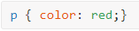

Введение в CSS
Стилем или CSS ( от англ. Cascading Style Sheets каскадные таблицы стилей) называется набор параметров форматирования, который применяется к элементам документа, чтобы изменить их внешний вид.
Пока HTML определяет содержимое и структуру веб-страницы, CSS занимается её стилизацией. Это подразумевает настройку цвета, шрифтов, размеров, полей, положения элементов веб-страницы, т.е. определяет ее визуальный стиль и внешний вид.
CSS выбирает элемент HTML (например, абзац), задаёт свойство для изменения (такое как цвет) и применяет определённое значение (например, красный):

Слово «стиль» может быть обманчивым. Можно подумать, CSS используется только для изменения цвета текста, размера и типа шрифта. Но CSS может задать компоновку HTML-документа, определяя высоту, ширину, внутренние и внешние поля, положение, колонки и др. Стили являются удобным, практичным и эффективным инструментом при вёрстке веб-страниц и оформления текста, таблиц, ссылок, изображений и пр.
Цвет, размеры, положение и другие параметры хранятся в определённом месте и легко подключаются к любому элементу.